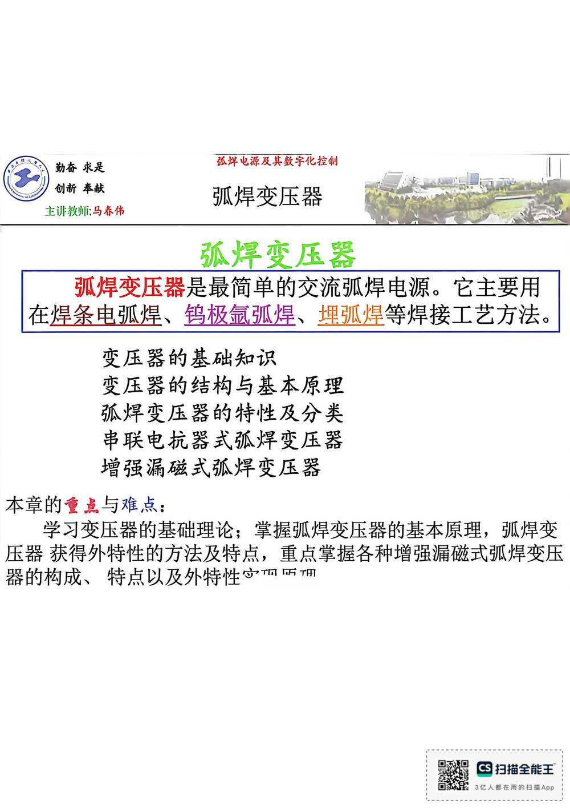

13 手写笔记/1~5周/h-w1-019 弧焊变压器是最简单的交流弧焊电源。它主要用
h-w1-019 弧焊变压器是最简单的交流弧焊电源。它主要用
📷 原图：
1~5周 焊接电源(1).pdf第 19 页（整页扫描，本库内嵌h-w1-019.jpg）
弧焊变压器是最简单的交流弧焊电源。它主要用

本页文字（OCR 整理）
- 弧焊变压器
- 弧焊变压器
- 弧焊变压器是最简单的交流弧焊电源。它主要用
- 在焊条电弧焊、鹅极氩弧焊、埋弧焊等焊接工艺方法。
- 变压器基础知识
- 变压器结构与基本原理
- 弧焊变压器特性及分类
- 串联电抗器式弧焊变压器
- 增强漏磁式弧焊变压器
- 本章的重点与难点：
- 学习变压器基础理论；掌握弧焊变压器的基本原理，弧焊变
- 压器获得外特性的方法及特点，重点掌握各种增强漏磁式弧焊变压
- 器构成、特点以及外特性宁面店™
本页重点（自动标记：含"定义/特点/要求/结论/公式"等，或与课件原句高度一致）
- 变压器结构与基本原理
- 弧焊变压器特性及分类
- 学习变压器基础理论；掌握弧焊变压器的基本原理，弧焊变
- 压器获得外特性的方法及特点，重点掌握各种增强漏磁式弧焊变压
- 器构成、特点以及外特性宁面店™
OCR 说明
文字由 macOS Vision 识别手写体/翻拍页面得到，错字难免（如"弧"误识为"孤"）；重点标记据此推断，请以页图为准。
对应讲义页
关联
- ← 上一页 · 总览 · 下一页 →
- 讲义：00 第3章 弧焊变压器 导航 · 概念：04 概念地图